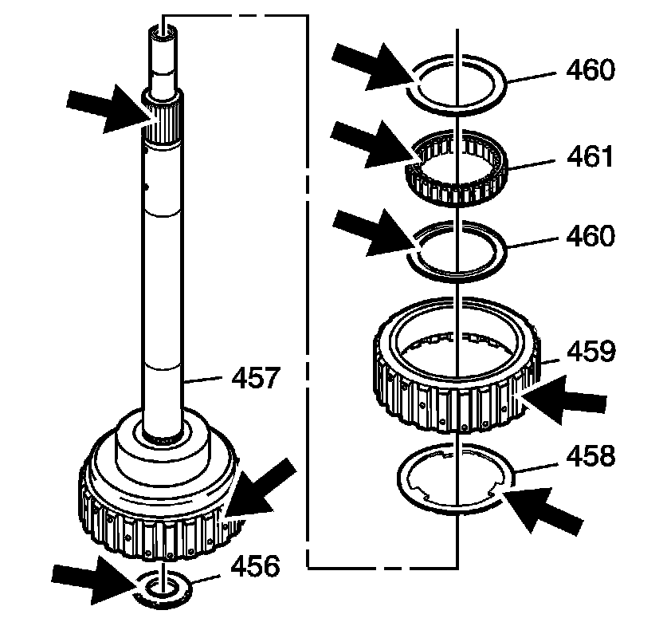
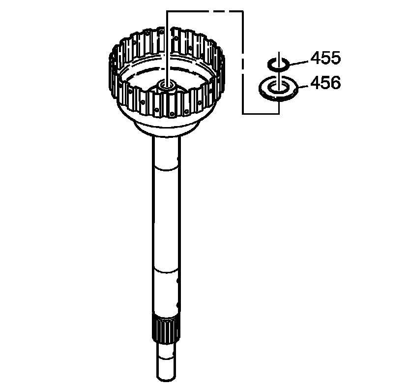
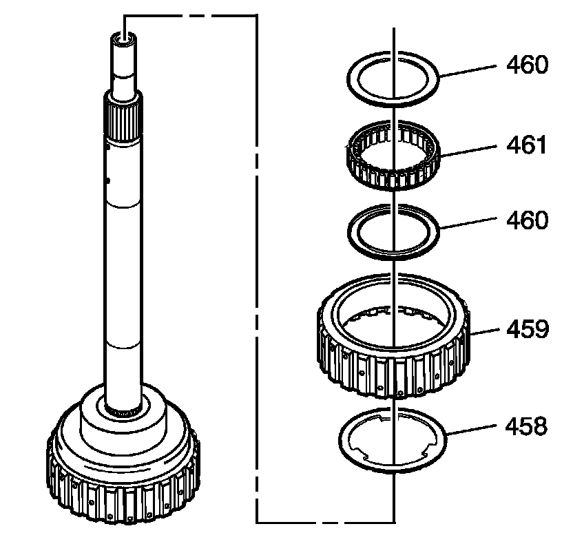
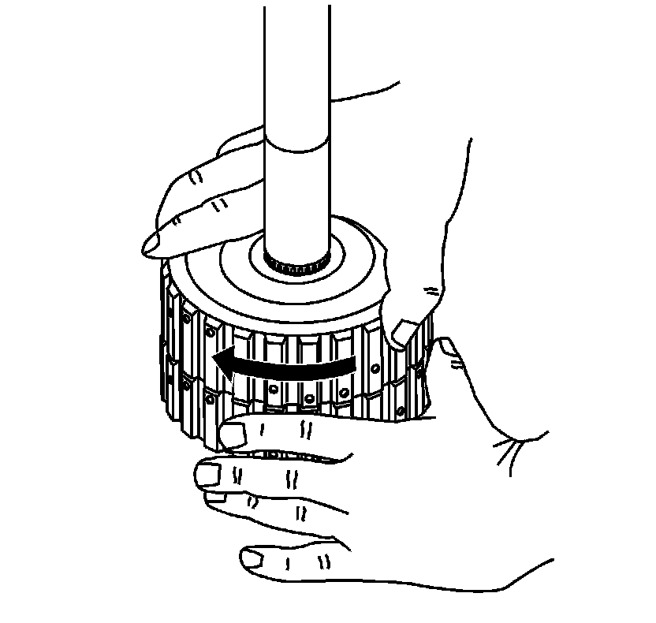
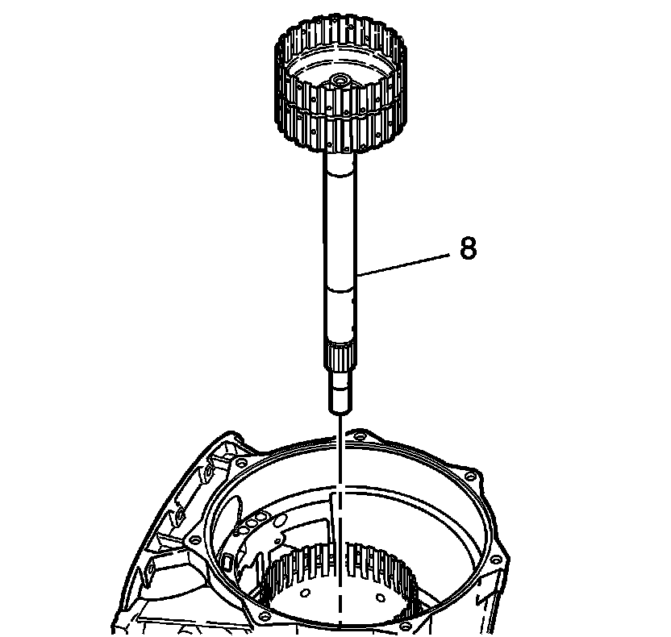

Input Sun Gear Shaft Assemble
Input Sun Gear Shaft Assemble

1. Inspect the outer race and input shaft for the following:
* Worn or damaged splines
* Scoring inside the diameter of the race
* Wear or cracks
2. Inspect the sprag elements for flat spots.
3. Inspect the cage for distortion or broken ribbon tabs.
4. Inspect the inner bearing for cracks.

5. Install the inner roller bearing (456).
6. Install the new inner race thrust ring (455).

7. Install the outer race washer (458) onto the outer race (459).
8. Install the retaining rings (460) and the forward clutch sprag (461) onto the outer race (459).
9. Install the sprag assembly (460, 461, 459) onto the sun gear shaft (457).

10. Check that the forward clutch sprag rotation freewheels and locks up in the correct direction.

11. Install the input sun gear shaft (8) into the case.